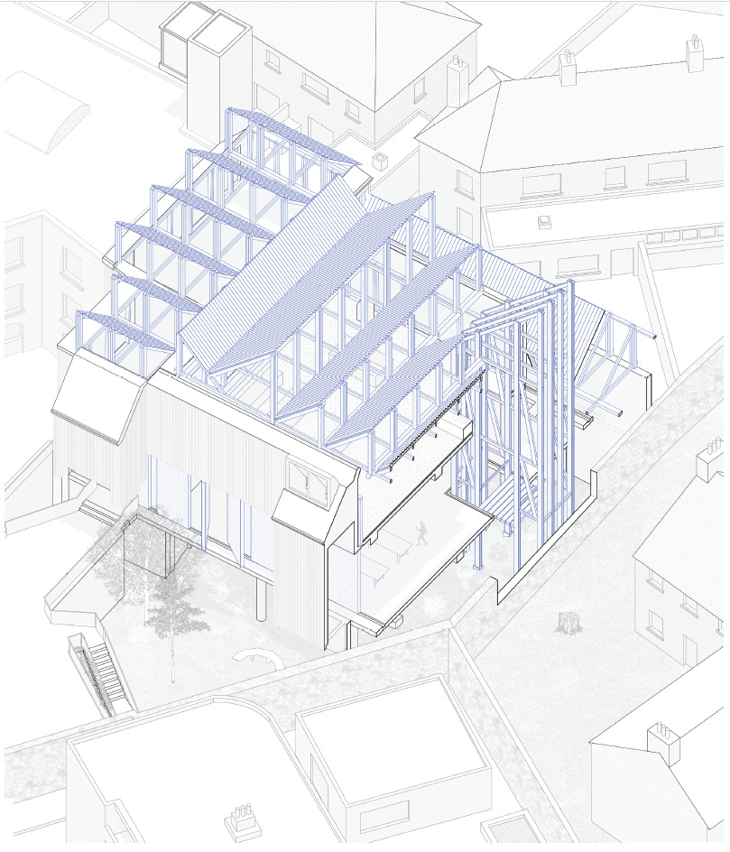
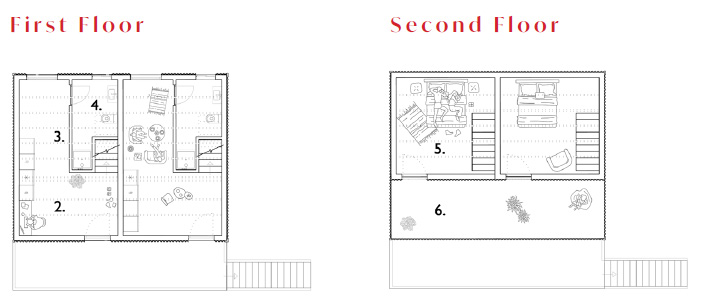
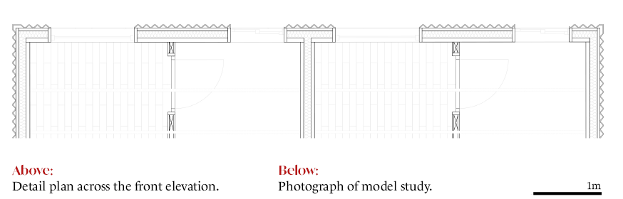

05 — Academic · Year 4
The project proposes a careful refurbishment of an existing Dublin building, converting the structure into a series of artist studios. The design strategy is one of minimal intervention — preserving the spatial character of the existing fabric while making precise additions that improve light, circulation, and the conditions for making.
The section is the primary design tool: it establishes the relationship between existing floor levels and new insertions, between solid wall and glazed opening, between the street and the interior courtyard that the studios face.



